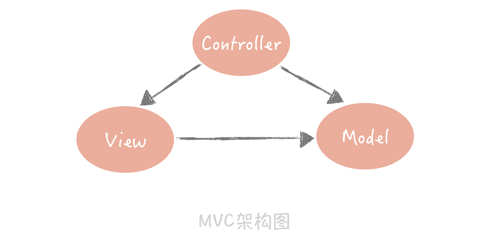
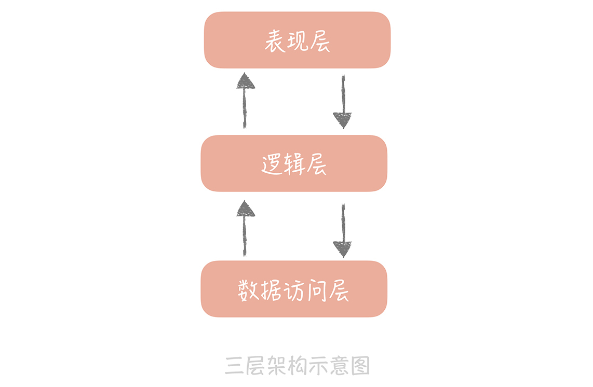
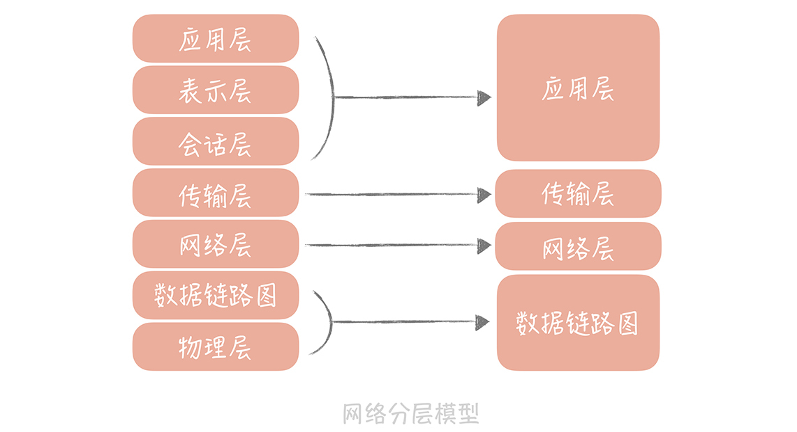
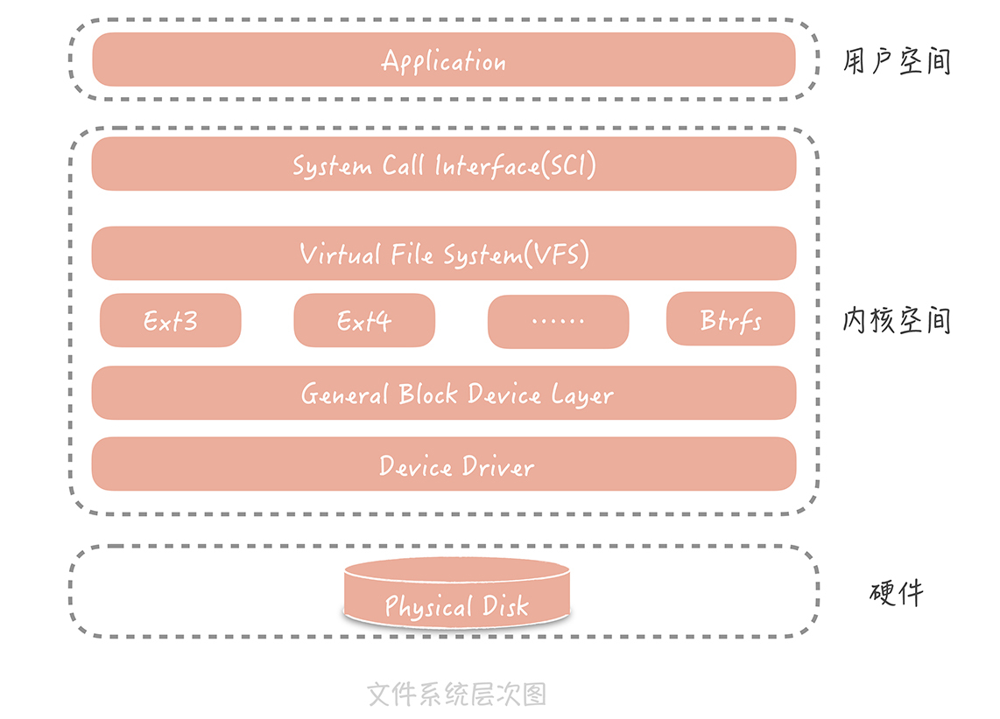
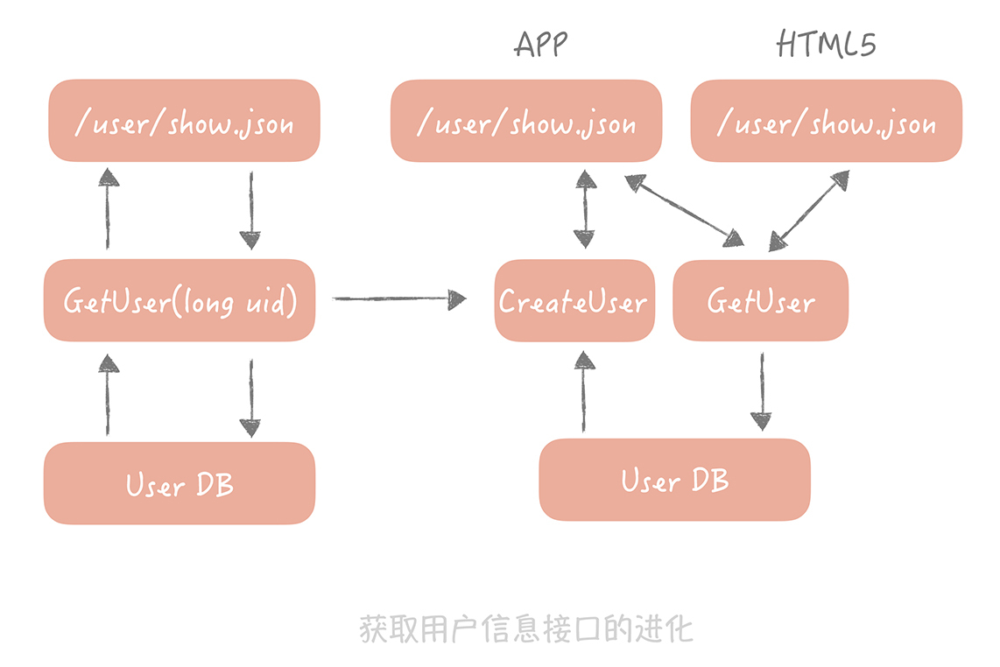

- 00 开篇词 为什么你要学习高并发系统设计？.md.html
- 01 高并发系统：它的通用设计方法是什么？.md.html
- 02 架构分层：我们为什么一定要这么做？.md.html
- 03 系统设计目标（一）：如何提升系统性能？.md.html
- 04 系统设计目标（二）：系统怎样做到高可用？.md.html
- 05 系统设计目标（三）：如何让系统易于扩展？.md.html
- 06 面试现场第一期：当问到组件实现原理时，面试官是在刁难你吗？.md.html
- 07 池化技术：如何减少频繁创建数据库连接的性能损耗？.md.html
- 08 数据库优化方案（一）：查询请求增加时，如何做主从分离？.md.html
- 09 数据库优化方案（二）：写入数据量增加时，如何实现分库分表？.md.html
- 10 发号器：如何保证分库分表后ID的全局唯一性？.md.html
- 11 NoSQL：在高并发场景下，数据库和NoSQL如何做到互补？.md.html
- 12 缓存：数据库成为瓶颈后，动态数据的查询要如何加速？.md.html
- 13 缓存的使用姿势（一）：如何选择缓存的读写策略？.md.html
- 14 缓存的使用姿势（二）：缓存如何做到高可用？.md.html
- 15 缓存的使用姿势（三）：缓存穿透了怎么办？.md.html
- 16 CDN：静态资源如何加速？.md.html
- 17 消息队列：秒杀时如何处理每秒上万次的下单请求？.md.html
- 18 消息投递：如何保证消息仅仅被消费一次？.md.html
- 19 消息队列：如何降低消息队列系统中消息的延迟？.md.html
- 20 面试现场第二期：当问到项目经历时，面试官究竟想要了解什么？.md.html
- 21 系统架构：每秒1万次请求的系统要做服务化拆分吗？.md.html
- 22 微服务架构：微服务化后，系统架构要如何改造？.md.html
- 23 RPC框架：10万QPS下如何实现毫秒级的服务调用？.md.html
- 24 注册中心：分布式系统如何寻址？.md.html
- 25 分布式Trace：横跨几十个分布式组件的慢请求要如何排查？.md.html
- 26 负载均衡：怎样提升系统的横向扩展能力？.md.html
- 27 API网关：系统的门面要如何做呢？.md.html
- 28 多机房部署：跨地域的分布式系统如何做？.md.html
- 29 Service Mesh：如何屏蔽服务化系统的服务治理细节？.md.html
- 30 给系统加上眼睛：服务端监控要怎么做？.md.html
- 31 应用性能管理：用户的使用体验应该如何监控？.md.html
- 32 压力测试：怎样设计全链路压力测试平台？.md.html
- 33 配置管理：成千上万的配置项要如何管理？.md.html
- 34 降级熔断：如何屏蔽非核心系统故障的影响？.md.html
- 35 流量控制：高并发系统中我们如何操纵流量？.md.html
- 36 面试现场第三期：你要如何准备一场技术面试呢？.md.html
- 37 计数系统设计（一）：面对海量数据的计数器要如何做？.md.html
- 38 计数系统设计（二）：50万QPS下如何设计未读数系统？.md.html
- 39 信息流设计（一）：通用信息流系统的推模式要如何做？.md.html
- 40 信息流设计（二）：通用信息流系统的拉模式要如何做？.md.html
- 加餐 数据的迁移应该如何做？.md.html
- 期中测试 10道高并发系统设计题目自测.md.html
- 用户故事 从“心”出发，我还有无数个可能.md.html
- 结束语 学不可以已.md.html
- 捐赠
02 架构分层：我们为什么一定要这么做？
在系统从 0 到 1 的阶段，为了让系统快速上线，我们通常是不考虑分层的。但是随着业务越来越复杂，大量的代码纠缠在一起，会出现逻辑不清晰、各模块相互依赖、代码扩展性差、改动一处就牵一发而动全身等问题。
这时，对系统进行分层就会被提上日程，那么我们要如何对架构进行分层？架构分层和高并发架构设计又有什么关系呢？本节课，我将带你寻找答案。
什么是分层架构
软件架构分层在软件工程中是一种常见的设计方式，它是将整体系统拆分成 N 个层次，每个层次有独立的职责，多个层次协同提供完整的功能。
我们在刚刚成为程序员的时候，会被“教育”说系统的设计要是“MVC”（Model-View-Controller）架构。它将整体的系统分成了 Model（模型），View（视图）和 Controller（控制器）三个层次，也就是将用户视图和业务处理隔离开，并且通过控制器连接起来，很好地实现了表现和逻辑的解耦，是一种标准的软件分层架构。

另外一种常见的分层方式是将整体架构分为表现层、逻辑层和数据访问层：
- 表现层，顾名思义嘛，就是展示数据结果和接受用户指令的，是最靠近用户的一层；
- 逻辑层里面有复杂业务的具体实现；
- 数据访问层则是主要处理和存储之间的交互。
这是在架构上最简单的一种分层方式。其实，我们在不经意间已经按照三层架构来做系统分层设计了，比如在构建项目的时候，我们通常会建立三个目录：Web、Service 和 Dao，它们分别对应了表现层、逻辑层还有数据访问层。

除此之外，如果我们稍加留意，就可以发现很多的分层的例子。比如我们在大学中学到的 OSI 网络模型，它把整个网络分了七层，自下而上分别是物理层、数据链路层、网络层、传输层、会话层、表示层和应用层。
工作中经常能用到 TCP/IP 协议，它把网络简化成了四层，即链路层、网络层、传输层和应用层。每一层各司其职又互相帮助，网络层负责端到端的寻址和建立连接，传输层负责端到端的数据传输等，同时呢相邻两层还会有数据的交互。这样可以隔离关注点，让不同的层专注做不同的事情。

Linux 文件系统也是分层设计的，从下图你可以清晰地看出文件系统的层次。在文件系统的最上层是虚拟文件系统（VFS），用来屏蔽不同的文件系统之间的差异，提供统一的系统调用接口。虚拟文件系统的下层是 Ext3、Ext4 等各种文件系统，再向下是为了屏蔽不同硬件设备的实现细节，我们抽象出来的单独的一层——通用块设备层，然后就是不同类型的磁盘了。
我们可以看到，某些层次负责的是对下层不同实现的抽象，从而对上层屏蔽实现细节。比方说 VFS 对上层（系统调用层）来说提供了统一的调用接口，同时对下层中不同的文件系统规约了实现模型，当新增一种文件系统实现的时候，只需要按照这种模型来设计，就可以无缝插入到 Linux 文件系统中。

那么，为什么这么多系统一定要做分层的设计呢？答案是分层设计存在一定的优势。
分层有什么好处
分层的设计可以简化系统设计，让不同的人专注做某一层次的事情。想象一下，如果你要设计一款网络程序却没有分层，该是一件多么痛苦的事情。
因为你必须是一个通晓网络的全才，要知道各种网络设备的接口是什么样的，以便可以将数据包发送给它。你还要关注数据传输的细节，并且需要处理类似网络拥塞，数据超时重传这样的复杂问题。当然了，你更需要关注数据如何在网络上安全传输，不会被别人窥探和篡改。
而有了分层的设计，你只需要专注设计应用层的程序就可以了，其他的，都可以交给下面几层来完成。
再有，分层之后可以做到很高的复用。比如，我们在设计系统 A 的时候，发现某一层具有一定的通用性，那么我们可以把它抽取独立出来，在设计系统 B 的时候使用起来，这样可以减少研发周期，提升研发的效率。
最后一点，分层架构可以让我们更容易做横向扩展。如果系统没有分层，当流量增加时我们需要针对整体系统来做扩展。但是，如果我们按照上面提到的三层架构将系统分层后，那么我们就可以针对具体的问题来做细致的扩展。
比如说，业务逻辑里面包含有比较复杂的计算，导致 CPU 成为性能的瓶颈，那这样就可以把逻辑层单独抽取出来独立部署，然后只对逻辑层来做扩展，这相比于针对整体系统扩展所付出的代价就要小的多了。
这一点也可以解释我们课程开始时提出的问题：架构分层究竟和高并发设计的关系是怎样的？在“[01 | 高并发系统：它的通用设计方法是什么？]”中我们了解到，横向扩展是高并发系统设计的常用方法之一，既然分层的架构可以为横向扩展提供便捷， 那么支撑高并发的系统一定是分层的系统。
如何来做系统分层
说了这么多分层的优点，那么当我们要做分层设计的时候，需要考虑哪些关键因素呢？
在我看来，最主要的一点就是你需要理清楚每个层次的边界是什么。你也许会问：“如果按照三层架构来分层的话，每一层的边界不是很容易就界定吗？”
没错，当业务逻辑简单时，层次之间的边界的确清晰，开发新的功能时也知道哪些代码要往哪儿写。但是当业务逻辑变得越来越复杂时，边界就会变得越来越模糊，给你举个例子。
任何一个系统中都有用户系统，最基本的接口是返回用户信息的接口，它调用逻辑层的 GetUser 方法，GetUser 方法又和 User DB 交互获取数据，就像下图左边展示的样子。
这时，产品提出一个需求，在 APP 中展示用户信息的时候，如果用户不存在，那么要自动给用户创建一个用户。同时，要做一个 HTML5 的页面，HTML5 页面要保留之前的逻辑，也就是不需要创建用户。这时逻辑层的边界就变得不清晰，表现层也承担了一部分的业务逻辑（将获取用户和创建用户接口编排起来）。

那我们要如何做呢？参照阿里发布的《阿里巴巴 Java 开发手册 v1.4.0（详尽版）》，我们可以将原先的三层架构细化成下面的样子：

我来解释一下这个分层架构中的每一层的作用。
- 终端显示层：各端模板渲染并执行显示的层。当前主要是 Velocity 渲染，JS 渲染， JSP 渲染，移动端展示等。
- 开放接口层：将 Service 层方法封装成开放接口，同时进行网关安全控制和流量控制等。
- Web 层：主要是对访问控制进行转发，各类基本参数校验，或者不复用的业务简单处理等。
- Service 层：业务逻辑层。
- Manager 层：通用业务处理层。这一层主要有两个作用，其一，你可以将原先 Service 层的一些通用能力下沉到这一层，比如与缓存和存储交互策略，中间件的接入；其二，你也可以在这一层封装对第三方接口的调用，比如调用支付服务，调用审核服务等。
- DAO 层：数据访问层，与底层 MySQL、Oracle、Hbase 等进行数据交互。
- 外部接口或第三方平台：包括其它部门 RPC 开放接口，基础平台，其它公司的 HTTP 接口。
在这个分层架构中主要增加了 Manager 层，它与 Service 层的关系是：Manager 层提供原子的服务接口，Service 层负责依据业务逻辑来编排原子接口。
以上面的例子来说，Manager 层提供创建用户和获取用户信息的接口，而 Service 层负责将这两个接口组装起来。这样就把原先散布在表现层的业务逻辑都统一到了 Service 层，每一层的边界就非常清晰了。
除此之外，分层架构需要考虑的另一个因素，是层次之间一定是相邻层互相依赖，数据的流转也只能在相邻的两层之间流转。
我们还是以三层架构为例，数据从表示层进入之后一定要流转到逻辑层，做业务逻辑处理，然后流转到数据访问层来和数据库交互。那么你可能会问：“如果业务逻辑很简单的话可不可以从表示层直接到数据访问层，甚至直接读数据库呢？”
其实从功能上是可以的，但是从长远的架构设计考虑，这样会造成层级调用的混乱，比方说如果表示层或者业务层可以直接操作数据库，那么一旦数据库地址发生变更，你就需要在多个层次做更改，这样就失去了分层的意义，并且对于后面的维护或者重构都会是灾难性的。
分层架构的不足
任何事物都不可能是尽善尽美的，分层架构虽有优势也会有缺陷，它最主要的一个缺陷就是增加了代码的复杂度。
这是显而易见的嘛，明明可以在接收到请求后就可以直接查询数据库获得结果，却偏偏要在中间插入多个层次，并且有可能每个层次只是简单地做数据的传递。有时增加一个小小的需求也需要更改所有层次上的代码，看起来增加了开发的成本，并且从调试上来看也增加了复杂度，原本如果直接访问数据库我只需要调试一个方法，现在我却要调试多个层次的多个方法。
另外一个可能的缺陷是，如果我们把每个层次独立部署，层次间通过网络来交互，那么多层的架构在性能上会有损耗。这也是为什么服务化架构性能要比单体架构略差的原因，也就是所谓的“多一跳”问题。
那我们是否要选择分层的架构呢？答案当然是肯定的。
你要知道，任何的方案架构都是有优势有缺陷的，天地尚且不全何况我们的架构呢？分层架构固然会增加系统复杂度，也可能会有性能的损耗，但是相比于它能带给我们的好处来说，这些都是可以接受的，或者可以通过其它的方案解决的。我们在做决策的时候切不可以偏概全，因噎废食。
课程小结
今天我带着你了解了分层架构的优势和不足，以及我们在实际工作中如何来对架构做分层。我想让你了解的是，分层架构是软件设计思想的外在体现，是一种实现方式。我们熟知的一些软件设计原则都在分层架构中有所体现。
比方说，单一职责原则规定每个类只有单一的功能，在这里可以引申为每一层拥有单一职责，且层与层之间边界清晰；迪米特法则原意是一个对象应当对其它对象有尽可能少的了解，在分层架构的体现是数据的交互不能跨层，只能在相邻层之间进行；而开闭原则要求软件对扩展开放，对修改关闭。它的含义其实就是将抽象层和实现层分离，抽象层是对实现层共有特征的归纳总结，不可以修改，但是具体的实现是可以无限扩展，随意替换的。
掌握这些设计思想会自然而然地明白分层架构设计的妙处，同时也能帮助我们做出更好的设计方案。
© 2019 - 2023 Liangliang Lee. Powered by gin and hexo-theme-book.